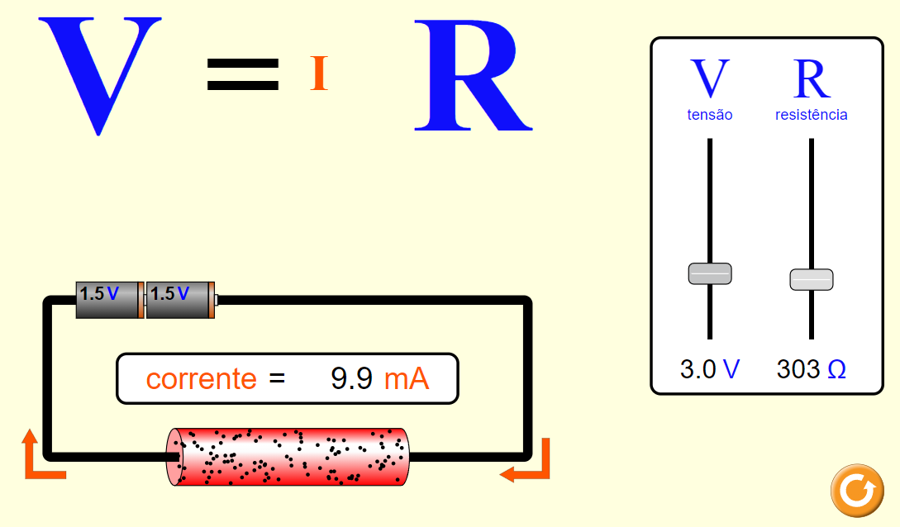

Lei de OHN
Oque é a lei de OHN
A Lei de Ohm, afirma que, para um condutor mantido à temperatura constante,
é também constante a razão entre a tensão entre dois pontos e a corrente elétrica.
Essa constante é denominada de resistência elétrica. Lei designada em homenagem ao seu formulador,
o físico alemão Georg Simon Ohm.

Fonte: Phet Colorado
Fonte: Phet Colorado